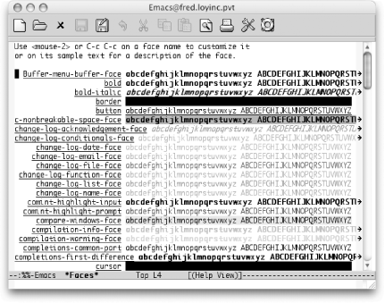

|
|
< Day Day Up > |
|
9.2. Writing CodeWe have already seen various examples of Emacs modes, including text mode (see Chapter 2) and shell mode (see Chapter 5). Special functionality like the buffer list (see Chapter 4) and Dired (see Chapter 5) are actually modes as well. All modes have two basic components: an Emacs Lisp package that implements the mode and a function that invokes it. 9.2.1 Language ModesThe version of Emacs on which this book is based (21.3.5) comes with language modes for Ada, assembly, awk, C, C++, Common Lisp, Fortran, ICON, Java, Lisp, MIM, Modula-2, Objective-C, Pascal, Pike, Perl, PROLOG, Python, Scheme, SGML, Simula, and SQL; future versions will undoubtedly add more. Many—but not all—of the language modes are "hooked" into Emacs so that if you visit a file with the proper filename suffix, you will automatically be put in the correct mode. To find out whether Emacs does this for the language you use, look up your language in the table of Emacs Lisp packages in Appendix B. If one or more suffixes is listed in the right-hand column, Emacs invokes the mode for files with those suffixes. However, if no suffix is listed (or if your compiler supports a different suffix than the ones listed), you can set up Emacs to invoke the mode automatically when you visit your source files. You need to do two things: first, look again at the right-hand column in the package table entry for your language, and you will find the name of the function that invokes the mode (e.g., ada-mode, modula-2-mode). Second, you insert code in your .emacs file that tells Emacs to automatically load the proper package whenever you visit a file with the suffix for the language in question. You need to write two lines of code for this customization. The first uses the autoload function, which tells Emacs where to look for commands it doesn't already know about. It sets up an association between a function and the package that implements the function so that when the function is invoked for the first time, Emacs loads the package to get the code. In our case, we need to create an association between a function that invokes a language mode and the package that implements the mode. This shows the format of autoload: (autoload 'function "filename" "description" t) Note the single quote preceding function and the double quotes around filename and description; for more details on this Lisp syntax, see Chapter 11. If you are a PHP programmer, for example, you can grab the latest Emacs PHP mode from http://sourceforge.net/projects/php-mode/ online. You would then put the following line in your .emacs file: (autoload 'php-mode "php-mode" "PHP editing mode." t) This tells Emacs to load the PHP package when the function php-mode is invoked for the first time. The second line of code completes the picture by creating an association between the suffix for source files in your language and the mode-invoking function so that the function is automatically invoked when you visit a file with the proper suffix. This involves the Emacs global variable auto-mode-alist, covered in Chapter 10; it is a list of associations that Emacs uses to put visited files in modes according to their names. To create such an association for PHP mode so that Emacs puts all files with the suffix .php in that mode, add this line to your .emacs file: (setq auto-mode-alist (cons '("\\.php$" . php-mode) auto-mode-alist))This Lisp code sets up the following chain of events when you visit a file whose suffix indicates source code in your programming language. Let's say you visit the file pgm.php. Emacs reads the file, then finds an entry corresponding to the .php suffix in the auto-mode-alist and tries to invoke the associated function php-mode. It notices that the function php-mode doesn't exist, but that there is an autoload association between it and the PHP package. It loads that package and, finding the php-mode command, runs it. After this, your buffer is in PHP mode. For some interpreted languages like Perl and Python, you will also want to update the interpreter-mode-alist global variable: (setq interpreter-mode-alist
(cons '("python" . python-mode)
interpreter-mode-alist))If your script file begins with the Unix interpreter prefix #!, Emacs checks that line to determine what language you are using. That can be especially helpful when the script file does not have a telltale extension like .py or .pl. 9.2.1.1 SyntaxAlthough language modes differ in exact functionality, they all support the same basic concepts. The most important of these involves knowledge of the syntax of the language in question—its characters, vocabulary, and certain aspects of its grammar. We have already seen that Emacs handles some syntactic aspects of human language. When you edit regular text, Emacs knows about words, sentences, and paragraphs: you can move the cursor and delete text with respect to those units. It also knows about certain kinds of punctuation, such as parentheses: when you type a right parenthesis, it "flashes" the matching left parenthesis by moving the cursor there for a second and then returning.[4] This is a convenient way of ensuring that your parentheses match correctly.
Emacs has knowledge about programming language syntax that is analogous to its knowledge of human language syntax. In general, it keeps track of the following basic syntactic elements:
Emacs keeps this information internally in the form of syntax tables; like keymaps (as described in Chapter 10), Emacs has a global syntax table used for all buffers, as well a local table for each buffer, which varies according to the mode the buffer is in. You can view the syntax table for the current buffer by typing C-h s (for describe-syntax). In addition, language modes know about more advanced language-dependent syntactic concepts like statements, statement blocks, functions, subroutines, Lisp syntactic expressions, and so on. 9.2.2 CommentsAll programming languages have comment syntax, so Emacs provides a few features that deal with comments in general; these are made language-specific in each language mode. The universal comment command for all language modes is M-; (for indent-for-comment).[5] When you type M-;, Emacs moves to a column equal to the value of the variable comment-column; if the text on the line goes past that column, it moves to one space past the last text character. It then inserts a comment delimiter (or a pair of opening and closing delimiters, as in /* and */ for C) and puts the cursor after the opening delimiter.
For example, if you want to add a comment to a statement, put the cursor anywhere on the line containing that statement and type M-;. The result is result += y; /* */You can then type your comment in between the delimiters. If you were to do the same thing on a longer line of code, say, q_i = term_arr[i].num_docs / total_docs; the result would be q_i = term_arr[i].num_docs / total_docs; /* */You can customize the variable comment-column, of course, by putting the appropriate code in your .emacs file. This is the most useful way if you want to do it permanently. But if you want to reset comment-column temporarily within the current buffer, you can just move the cursor to where you want the comment column to be and type C-x ; (for set-comment-column). Note that this command affects only the value of comment-column in the current buffer; its value in other buffers—even other buffers in the same mode—is not changed. When you are typing a comment and want to continue it on the next line, M-j (for indent-new-comment-line) does it. This command starts a new comment on the next line (though some language modes allow you to customize it so that it continues the same comment instead). Say you have typed in the text of the comment for this statement, and the cursor is at the end of the text: result += y; /* add the multiplicand */You want to extend the comment to another line. If you type M-j, you get the following: result += y; /* add the multiplicand*/
/* */You can type the second line of your comment. You can also use M-j to split existing comment text into two lines. Assume your cursor is positioned like this: result += y; /* add the multiplicand */If you type M-j now, the result is: result += y; /* add the */
/* multiplicand */If you want to comment out a section of your code, you can use the comment-region command (not bound to keystrokes except in certain language modes). Assume you have code that looks like this: this = is (a);
section (of, source, code);
that += (takes[up]->a * number);
of (lines);If you define a region in the usual way and type M-x comment-region, the result is: /* this = is (a); */ /* section (of, source, code); */ /* that += (takes[up]->a * number); */ /* of (lines); */ You can easily get rid of single-line comments by typing M-x kill-comment Enter, which deletes any comment on the current line. The cursor does not have to be within the comment. Each language mode has special features relating to comments in the particular language, usually including variables that let you customize commenting style. 9.2.3 Indenting CodeIn addition to syntactic knowledge, Emacs language modes contain various features to help you produce nicely formatted code. These features implement standards of indentation, commenting, and other aspects of programming style, thus ensuring consistency and readability, getting comments to line up, and so on. Perhaps more importantly, they relieve you of the tiresome burden of supplying correct indentation and even of remembering what the current indentation is. The nicest thing about these standards is that they are usually customizable. We have already seen that, in text mode, you can type C-j instead of Enter, at the end of a line, and Emacs indents the next line properly for you. This indentation is controlled by the variable left-margin, whose value is the column to indent to. Much the same thing happens in programming language modes, but the process is more flexible and complex. As in text mode, C-j indents the next line properly in language modes. You can also indent any line properly after it has been typed by pressing Tab with the cursor anywhere on the line. Some language modes have extra functionality attached to characters that terminate statements—like semicolons or right curly braces—so that when you type them, Emacs automatically indents the current line. Emacs documentation calls this behavior electric. Most language modes also have sets of variables that control indentation style (and that you can customize). Table 9-2 lists a few other commands relating to indentation that work according to the rules set up for the language in question.
The following is an example of what C-M-\ does. This example is in C, and subsequent examples refer to it. The concepts in all examples in this section are applicable to most other languages; we cover analogous Lisp and Java features in the sections on modes for those languages. Suppose you have the following C code: int times (x, y)
int x, y;
{
int i;
int result = 0;
for (i = 0; i < x; i++)
{
result += y;
}
}If you set mark at the beginning of this code, put the cursor at the end, and type C-M-\, Emacs formats it like this: int times (x, y)
int x, y;
{
int i;
int result = 0;
for (i = 0; i < x; i++)
{
result += y;
}
}C-M-\ is also handy for indenting an entire file according to your particular indentation style: you can just type C-x h (for mark-whole-buffer) followed by C-M-\. M-m is handy for moving to the beginning of the actual code on a line. For example, assume your cursor is positioned like this: int result = 0;If you type M-m, it moves to the beginning of the int: int result = 0;As an example of M-^, let's say you want the opening curly brace for the for statement to appear on the same line as the for. Put the cursor anywhere on the line with the opening curly brace, type M-^, and the code looks like this: for (i = 0; i < x; i++) {
result += y;
}Language modes usually provide additional indentation commands that relate to specific features of the language. Having covered the general language mode concepts, we want to show you a few other general utilities: etags and font-lock mode. The etags facility helps programmers who work on large, multifile programs. All language modes can also take advantage of font-lock mode to make development more efficient. 9.2.4 etagsAnother general feature of Emacs that applies to programmers is the etags facility.[6] etags works with code in many other languages as well, including Fortran, Java, Perl, Pascal, LATEX,, Lisp, and many assembly languages. If you work on large, multifile projects, you will find etags to be an enormous help.
etags is basically a multifile search facility that knows about C and Perl function definitions as well as searching in general. With it, you can find a function anywhere in an entire directory without having to remember in which file the function is defined, and you can do searches and query-replaces that span multiple files. etags uses tag tables, which contain lists of function names for each file in a directory along with information on where the functions' definitions are located within the files. Many of the commands associated with etags involve regular expressions (see Chapter 11) in search strings. To use etags, you must first invoke the separate etags program in your current directory to create the tag table. Its arguments are the files for which you want tag information. The usual way to invoke it is etags *.[ch], that is, building a tag table from all files ending in .c or .h. (That's for you C programmers; other languages would use their appropriate extensions, of course.) You can run etags from shell mode or with the command M-! (for shell-command). The output of etags is the file TAGS, which is the tag table. When you are writing code, you can update your tag table to reflect new files and function definitions by invoking etags again. After you have created the tag table, you need to make it known to Emacs. To do this, type M-x visit-tags-table Enter. This prompts you for the name of the tag table file; the default is TAGS in the current directory, as you would expect. After you execute this step, you can use the various Emacs tags commands. The most important tag command is M-. (for find-tag). This command prompts you for a string to use in searching the tag table for a function whose name contains the string. Supply the search string, and Emacs visits the file containing the matching function name in the current window and goes to the first line of the function's definition. A variation of M-. is C-x 4 . (for find-tag-other-window), which uses another window instead of replacing the text in your current window. A nice feature of M-. is that it picks up the word the cursor is on and uses it as the default search string. For example, if your cursor is anywhere on the string my_function, M-. uses my_function as the default. Thus, when you are looking at a C statement that calls a function, you can type M-. to see the code for that function. If you have multiple functions with the same name, M-. finds the function in the file whose name comes first in alphabetical order. To find the others, you can use the command M-, (for tags-loop-continue) to find the next one (or complain if there are no more). This feature is especially useful if your directory contains more than one program, that is, if there is more than one function called main. M-, also has other uses, as we will see. You can use the tag table to search for more than just function definitions. The command M-x tags-search Enter prompts for a regular expression; it searches through all files listed in the tag table (such as, all .c and .h files) for any occurrence of the regular expression, whether it is a function name or not. This capability is similar to the grep facility discussed earlier in this chapter. After you have invoked tags-search, you can find additional matches by typing M-,. There is also an analogous query-replace capability. The command M-x tags-query-replace Enter does a regular expression query-replace (see Chapter 3) on all files listed in the tag table. As with the regular query-replace-regexp command, if you precede tags-query-replace with a prefix argument (i.e., C-u M-x tags-query-replace Enter), Emacs replaces only matches that are whole words. This feature is useful, for example, if you want to replace occurrences of printf without disturbing occurrences of fprintf. If you exit a tags-query-replace with Esc or C-g, you can resume it later by typing M-,. The command M-x tags-apropos rounds out the search facilities of etags. If you give it a regular expression argument, it opens a *Tags List* buffer that contains a list of all tags in the tag table (including names of files as well as functions) that match the regular expression. For example, if you want to find out the names of output routines in a multiple-file C program, you could invoke tags-apropos with the argument print or write. Finally, you can type M-x list-tags Enter to list all the tags in the table—that is, all the functions—for a given C file. Supply the filename at the prompt, and you get a *Tags List* buffer showing the names of functions defined in that file along with their return types (if any). Note that if you move your cursor to this list, you can use M-. to look at the actual code for the function. M-. picks up the word the cursor is on as the default function name, so you can just move the cursor to the name of the function you want to see and press M-. followed by Enter to see it. 9.2.5 Fonts and Font-lock ModeThere's one last common feature to mention. The use of fonts to help present code is very popular—so popular, in fact, that it is now universal. Unlike the indentation and formatting supported by the various language modes, nothing in the code itself changes. But when you're in font-lock mode, your program certainly looks different. You can turn on this feature for any language mode with M-x font-lock-mode to see for yourself. Keywords get a particular color; comments get a different color and are often italicized; strings and literals get yet another color. It can aid quick browsing of code. Many people come to depend on it much the way they rely on proper indentation. If you become one of those people, you'll want to make it the default for all language sessions. You can add the following line to your .emacs file to achieve this aim: ;; Turn on font-locking globally (global-font-lock-mode t) The colors and styles used are customizable if you don't like the defaults. M-x list-faces-display produces a list of the named faces Emacs knows about. You'll see something similar to the screen shown in Figure 9-1. Figure 9-1. Fonts available for customization in EmacsOf course, in real life, the colors and bold and whatnot should be more pronounced. You'll also see quite a few more faces. You can modify any of those faces with either M-x modify-face (a simple prompted "wizard" approach) or M-x customize-face (the big fancy interactive approach). You can also add lines to your .emacs file for your favorite customizations. Here's an example: '(font-lock-comment-face
((((class color) (background light))
(:foreground "Firebrick" :slant italic)))))Note that not all displays support all of the possible variations of bold, italic, underline, colors, and so on. This is a classic case of "your mileage may vary." Still, with the ability to customize it all yourself, you should be able to find a combination that works well on your system. The remaining sections in this chapter deal with several of the language-specific modes including JDEE, a suite of packages devoted to the world of Java development in Emacs. You need not read all of these sections if you are interested in only one or two of the languages. If you program in another language for which Emacs has a mode, you may want to read one of the following sections to get the "flavor" of a language mode; all language modes have the same basic concepts, so this should get you off to a good start. Indeed, many language modes use another mode as a base. For example, Java mode is really just an extension of C mode. |
|
|
< Day Day Up > |
|